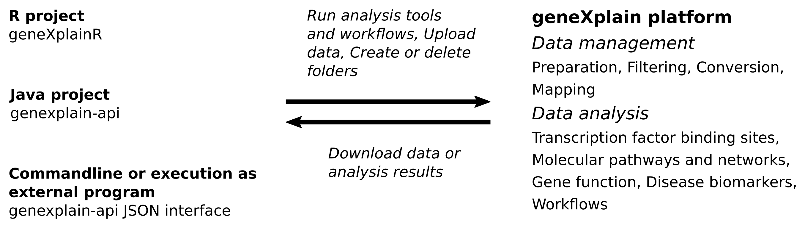

The geneXplain platform
The geneXplain platform provides a comprehensive environment to analyze biomedical and biological data. Its functionality includes, among other things, data storage, data management, data sharing, running bioinformatics and systems biology analysis tools, building and running analysis pipelines and workflows, building and visualizing molecular network models, or developing quantitative models and simulation. More details about the platform can be found here and in corresponding research articles.
Interfaces of the geneXplain platform
The platform can be used through a graphical web interface or through APIs that have been implemented in the languages Java and R. Besides being integrated as a software library, the genexplain-api package provides several commandline utilities. The exec tool allows to configure and run remote analyses using JSON input files. The JSON interface is described in detail in the genexplain-api documentation.
The following figure sketches some of the tasks that can be carried out with the platform APIs. All analysis and utility tools provided by the geneXplain platform as well as integrated Galaxy tools and workflows can be executed using API functions. In addition, there are methods to manage, organize and download research data and analysis results. Notably, analysis jobs can run asynchronously so that one is not required to wait for long analysis tasks.
Figure 1. Overview of API tasks that can be carried out on a remote platform server.

This tutorial
The goal of this tutorial is to demonstrate how to carry out analyses on the geneXplain platform using the APIs with a focus on geneXplainR and the Java commandline application.
For those who would like to firstly see an example analysis, a quick start is provided here.
Platform version
The exercises shown in this tutorial use geneXplain platform version 7.0.
Prerequisites for tutorial exercises
- A user account for the genexplain platform. This can be obtained here.
- For parts requiring the Java API: Java JDK version 8
- For parts requiring geneXplainR: R version ≥ 3.3
- For parts that depend on analysis of transcription factor binding sites: a TRANSFAC® license. This can be obtained here.
- An API package, Java or R. Please see below how to obtain them.
We recommend obtaining the Java API package even if a user prefers R as the programming language, because the Java package provides a few additional utilities.
Obtaining the APIs
The genexplain-api and geneXplainR projects are available at GitHub.
Hence, there are easy ways to download the Git projects either as ZIP archives from respective
GitHub sites (here and
here) or by cloning them using the Git clone tool in
a console as shown below.
1 2 3 4 5 | |
Building the Java API JAR
After obtaining the genexplain-api source tree, the JAR is created using the Gradle build tool.
1 2 | |
The Gradle script creates the JAR file genexplain-api-1.0.jar in the build/libs subfolder.
Installing geneXplainR
The geneXplainR package can be installed from its GitHub repository using the install_github
function of the devtools package.
1 2 3 | |